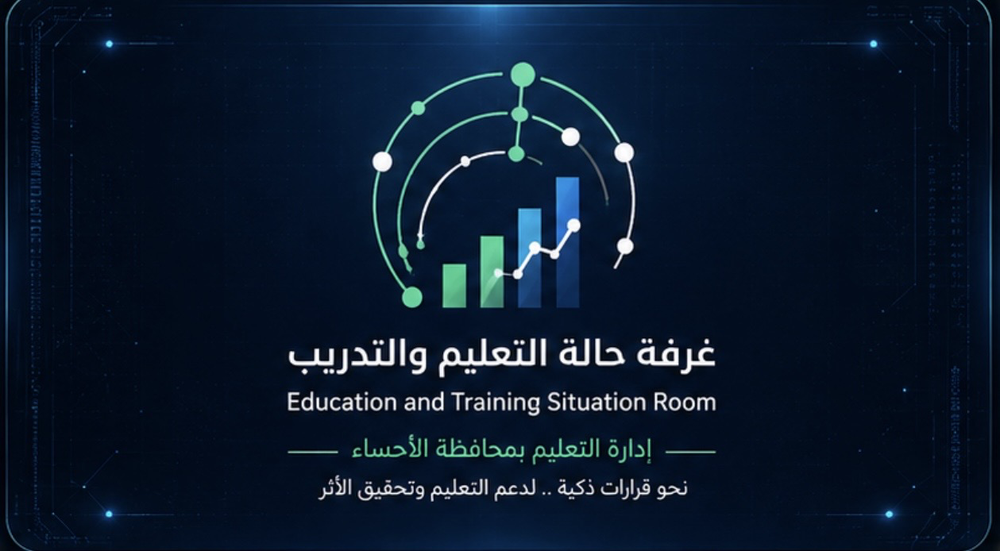
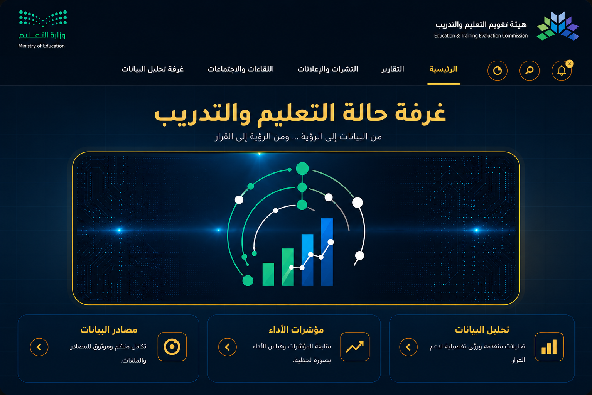

إدارة التعليم بمحافظة الأحساء
غرفة حالة التعليم والتدريب
من البيانات إلى الرؤية... ومن الرؤية إلى القرار

تحليل البياناتتحليلات متقدمة ورؤى تفصيلية لدعم القرار.
←
⌁مؤشرات الأداءمتابعة المؤشرات وقياس الأداء بصورة لحظية.
←
◎مصادر البياناتتكامل منظم وموثوق للمصادر والملفات.
←
♧اللقاءاتاجتماعات فعالة وقرارات موثقة.
←
♧التنبيهاتتنبيهات مهمة للمستجدات والتحديثات.
←
◎إدارة الأهدافخطط استراتيجية وأهداف ذكية قابلة للمتابعة.
←
🏆 أبرز الإنجازات
تحليل نتائج المؤشرات التعليمية وتحويلها إلى رؤى داعمة للقرار•
إعداد تقارير نوعية تعكس واقع التعليم وتدعم فرص التحسين•
بناء لوحات مؤشرات لقراءة الأداء ومتابعة مستهدفات التطوير•
تفعيل تحليل البيانات لدعم دقة القراءة وسرعة القرار•
توثيق اللقاءات والاجتماعات وتحويل المخرجات إلى إجراءات تطويرية•
من البيانات إلى الرؤية... ومن الرؤية إلى القرار... ومن القرار إلى الأثر•
التقارير
اللقاءات والاجتماعات
مصادر البيانات
إدارة الأهداف
خطط استراتيجية وأهداف قابلة للمتابعة والقياس.
غرفة تحليل البيانات
مساحة جاهزة لإضافة لوحات التحليل والرسوم والمؤشرات الفعلية.